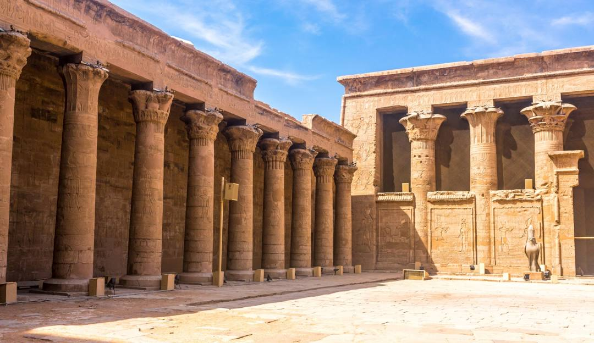

| Egyptian Historical Sites | |||
|---|---|---|---|
| Famous historical sites in Egypt to view when planning your next trip! | |||
The Giza Pyramids, built over 4,500 years ago, are among Egypt's most iconic landmarks, drawing millions of tourists annually. The Great Pyramid of Giza, a tomb for Pharaoh Khufu, stands as a marvel of ancient engineering and one of the Seven Wonders of the Ancient World. Visitors to the Giza Plateau can explore these majestic structures, the Sphinx, and nearby tombs, gaining insights into ancient Egypt's rich history and cultural legacy. |
The Luxor Temple, located on the Nile's east bank in Luxor, Egypt, showcases the grandeur of ancient Egyptian civilization. Built by Pharaohs Amenhotep III and Ramesses II, it was central to the Opet Festival, celebrating fertility and renewal. Visitors can admire colossal statues, towering columns, and detailed hieroglyphics. At sunset, the temple is beautifully illuminated, offering a mesmerizing glimpse into the world of the pharaohs. |
||
The Abu Simbel Temples in southern Egypt, built by Pharaoh Ramesses II, are monumental structures carved into a mountainside. Featuring colossal statues of the pharaoh and his queen Nefertari, these temples were relocated to avoid flooding by Lake Nasser. Visitors marvel at the grand statues, intricate carvings, and the sun's alignment that illuminates the inner sanctum twice a year, showcasing ancient Egypt's architectural brilliance. |
Hatshepsut's Temple, located in Deir el-Bahari near Luxor, is a stunning example of ancient Egyptian architecture. Built by the female Pharaoh Hatshepsut, this terraced temple blends harmoniously with the cliffs behind it. Visitors can admire the grand ramps, colonnaded terraces, and detailed reliefs depicting Hatshepsut's divine birth and trade expeditions. The temple's design reflects Hatshepsut's reign and her legacy as one of Egypt's most successful pharaohs. |
||
The Dendera Temple, dedicated to the goddess Hathor, is located in Qena, Egypt. This well-preserved temple complex features intricate carvings, massive columns, and a famed zodiac ceiling. Visitors can explore the hypostyle hall, roof chapels, and the sacred lake. The temple's richly decorated walls and astronomical ceiling highlight the ancient Egyptians' advanced understanding of astronomy and their devotion to Hathor, the goddess of love and joy. |
 | The Edfu Temple, dedicated to the falcon god Horus, is one of the best-preserved ancient temples in Egypt. Located between Luxor and Aswan, this temple's massive pylon, detailed reliefs, and well-preserved statues offer a glimpse into Ptolemaic-era architecture. Visitors can explore the courtyard, hypostyle hall, and the sanctuary of Horus. The temple's inscriptions narrate the mythological battle between Horus and Seth, emphasizing its religious significance and architectural grandeur. |
|